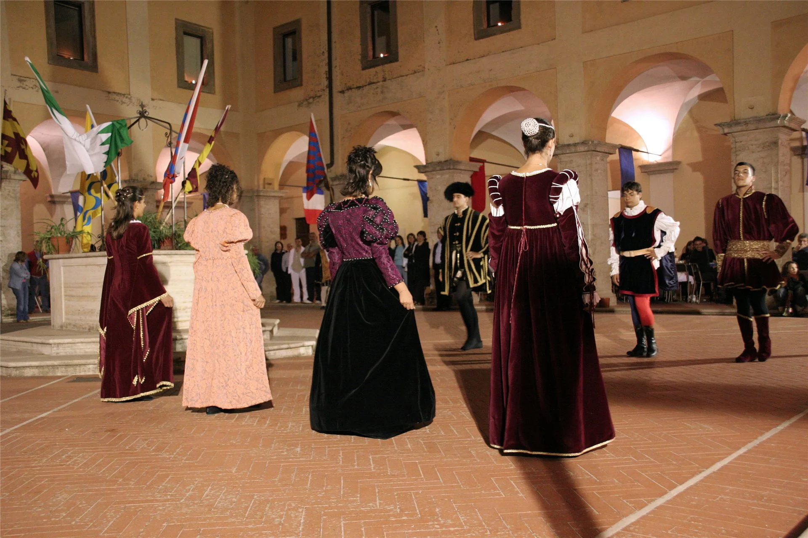
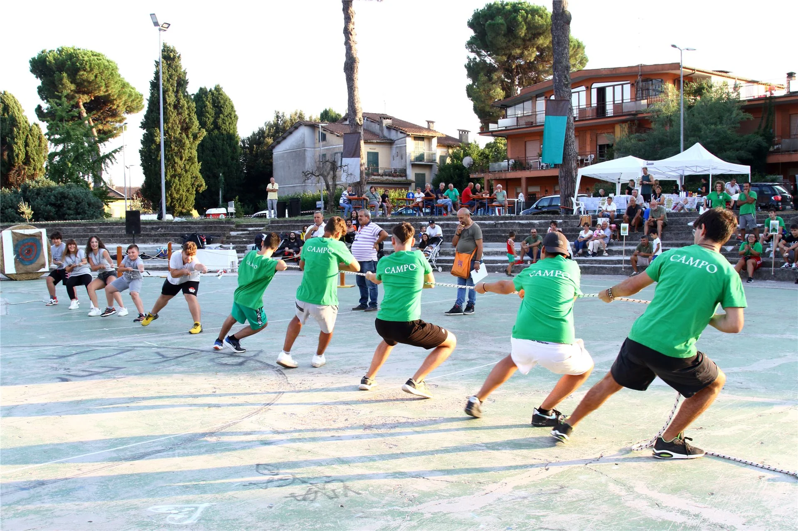
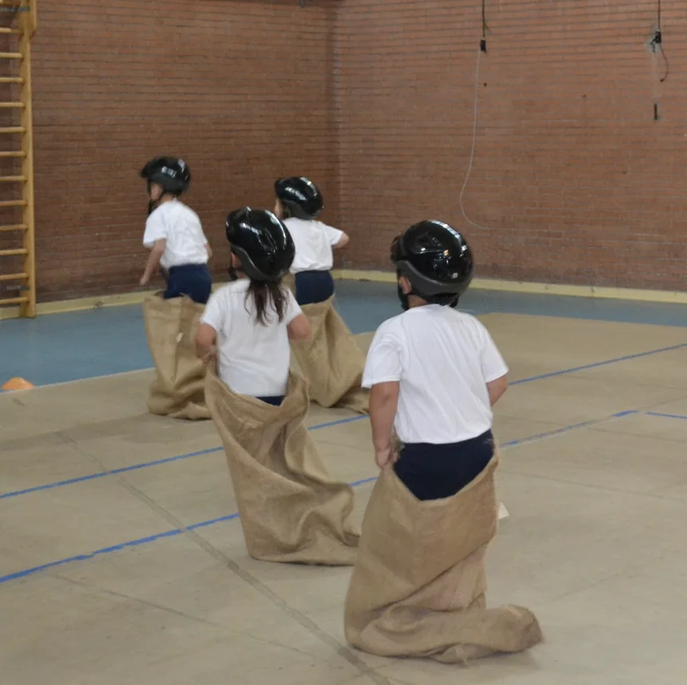
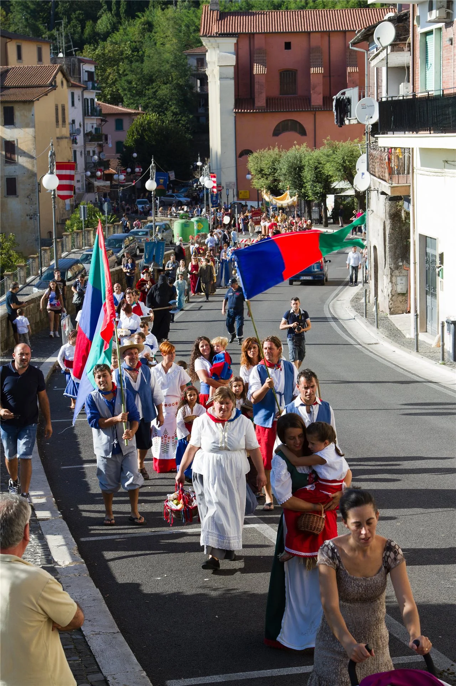
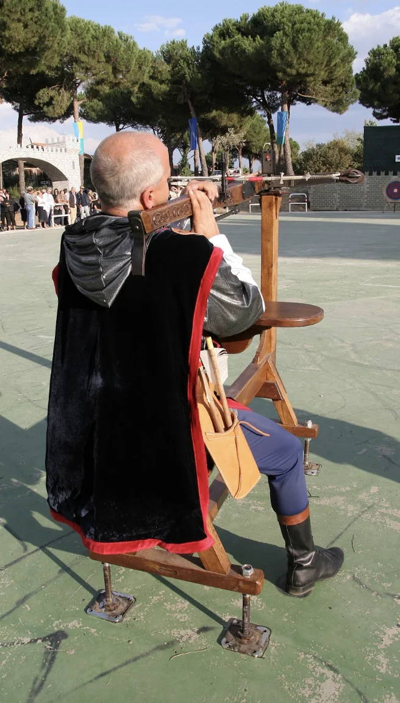

Ogni Settembre · Cave (RM)
La Rievocazione
Il Giuramento, i Giochi Popolari, il Corteo Storico e la firma della Pace
Come si svolge
Il percorso dell'evento
La prima domenica di apertura, dopo la solenne celebrazione della Santa Messa, l'atmosfera si fa carica di tensione ed emozione. I priori di contrada, gli arcieri, i balestrieri e i campioni delle sette contrade si radunano per il solenne Giuramento. Davanti alla comunità e sotto lo sguardo dei nobili, i contendenti promettono lealtà e onore. A seguire, la suggestiva Cena Rinascimentale suggella l'apertura ufficiale del Palio in un banchetto d'altri tempi.

Nelle serate della settimana che precede il Palio, le sette contrade si sfidano nei giochi popolari: tiro alla fune, corsa nei sacchi, ruzzica, anelli, conca e gioco della palla grossa. Prove di pura forza, destrezza e astuzia tramandate di generazione in generazione.

Un momento speciale dedicato ai più piccoli! Da anni l'associazione promuove i giochi popolari anche tra i bambini, per tramandare il valore del gioco all'aperto e del divertimento di squadra. Corsa nei sacchi, tiro alla fune, conca e molte altre sfide aspettano i partecipanti dai 5 ai 17 anni.

La domenica si apre la mattina con la solenne rievocazione della firma del Trattato di Pace
a Piazza Garibaldi dopo l'arrivo dei Cardinali e del Duca d'Alba.
Nel pomeriggio sfila il maestoso Grande Corteo Storico per le vie del paese
con nobili, dame, cavalieri, armigeri e i gruppi storici ospiti d'onore.

Il pomeriggio della domenica si infiamma con la disputa dei tiri con l'Arco e la Balestra antica da banco all'Anfiteatro Comunale. Solo all'ultimo scoccare di freccia viene sollevato e consegnato il Drappo del Palio e il Premio della Pace alla contrada vincitrice, tra l'urlo della folla e lo spettacolo di diversi gruppi storici provenienti da tutta Italia.

Consulta tutti gli orari precisi, le location e i gruppi storici partecipanti nel programma ufficiale.
Sei del territorio?
Vuoi sfilare nel Corteo?
Non hai il costume d'epoca? Non preoccuparti: te lo troviamo noi!
Contattaci in DM sui social o telefonicamente per iscriverti.